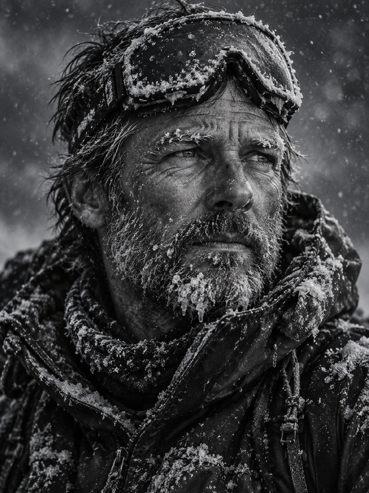

雪崩
寂静岭的十二小时，以及那些未能下山的人。
气
象台发出暴雪红色预警时，第七科考队已经越过了寂静岭的雪线。在这个海拔，空气稀薄得像被抽干了水分的海绵，每一次呼吸都带着血腥味。
队长李维拉紧了冲锋衣的领口。他曾在世界各地的极寒地带执行过任务，但寂静岭的风不同。这里的风不呼啸，而是发出一种低沉的、类似重型机械运转的嗡鸣。下午两点，天色已经暗得像黄昏。

根据卫星回传的数据，冷锋将在三小时后彻底吞噬他们所在的 4 号营地。撤退路线只有一条，那就是穿过被称为“鬼见愁”的狭窄冰塔林。但温度下降的速度超出了所有气象模型的预测，电子设备开始接连失效，GPS 屏幕上的光斑闪烁了两下，彻底熄灭。
风暴眼中的寂静
晚八点，风暴达到了顶峰。如果此时有人能从万米高空俯瞰，会看到整个寂静岭被一个巨大的白色旋涡包裹。但在风暴的最中心，反而出现了一种诡异的平静。
雪花不再是横向飞舞，而是像铅块一样垂直砸下。营地帐篷的支撑杆在积雪的重压下发出痛苦的呻吟。无线电里只剩下沙沙的静电噪音，像是有无数人在用气声低语。
“那一刻，我感觉不是我们在攀登雪山，而是雪山在缓慢地咀嚼我们。”
李维知道，他们不能再等下去了。留在帐篷里是慢性死亡，冲出去也许还有一线生机。他点燃了最后一根防风火柴，微弱的橘色火光在五个队员绝望的瞳孔里跳跃。
此后的十二小时，成为了现代登山史上的一个谜。搜救队在三天后抵达 4 号营地时，只找到了半埋在雪中的空帐篷，以及一本被冻成冰块的航海日志。
最后一页上，只有潦草的一句话：“雪太白了，白得让人想睡去。”